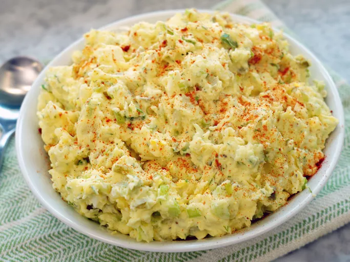

Potato Salad

Description
This classic potato salad is the best. Creamy, tangy, and crunchy, with a hint of spice and sweetness from pickles, it reminds me of my grandmother's potato
Ingredients
- 5 pounds russet potatoes, peeled
- 4 large eggs
- 4 teaspoons kosher salt, or to taste, divided
- 1 cup mayonnaise
- 5 stalks green onions, sliced (white and green parts)
- 2 stalks celery, minced
- ½ cup chopped spicy sweet dill pickles (such as Wickles)
Steps
- Cut potatoes into 1 1/2-inch cubes.
- Remove eggs with a slotted spoon and immediately immerse in ice water
- Peel and chop eggs; set aside.